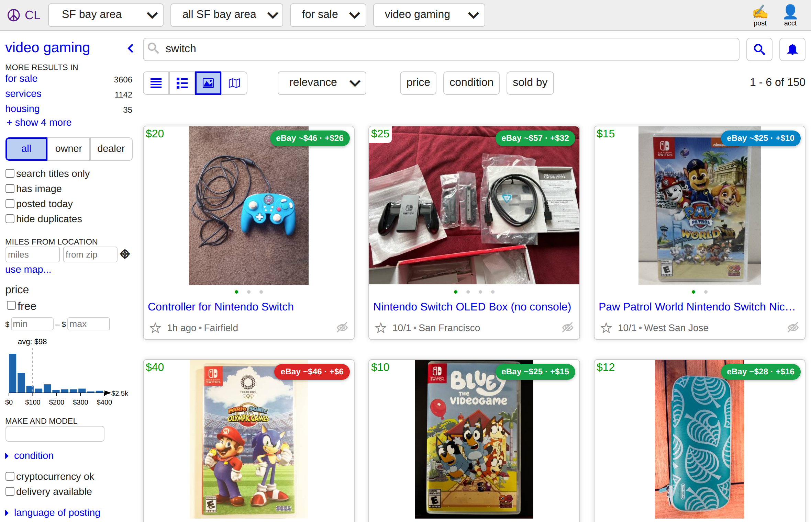
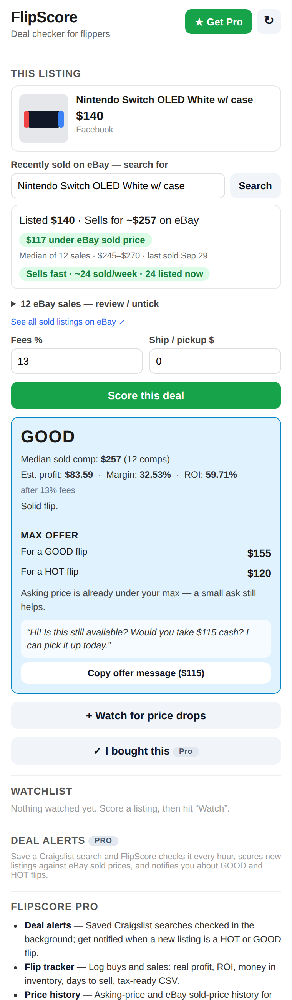
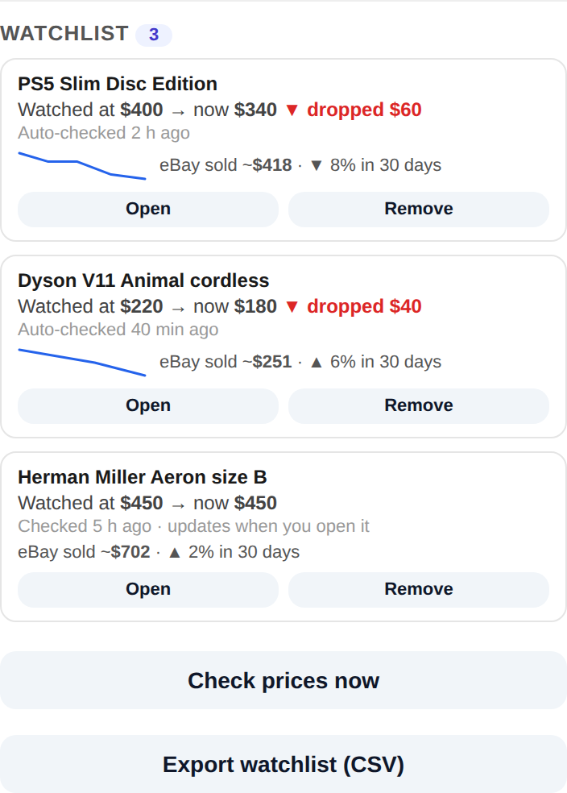
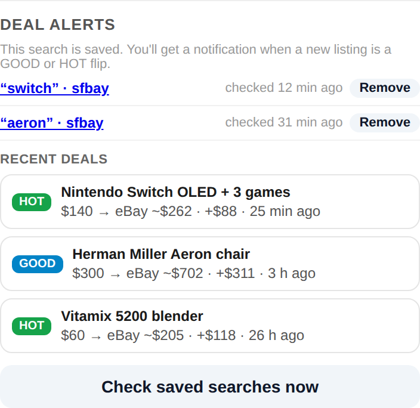
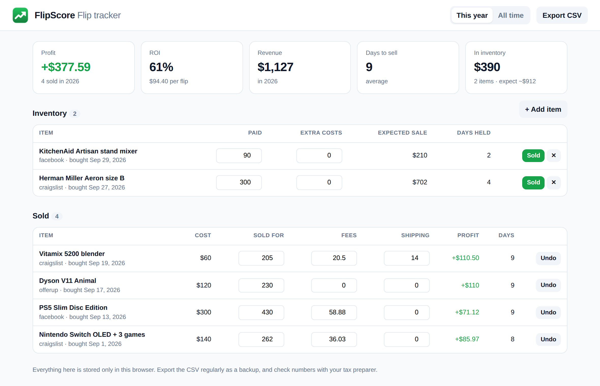

Is it worth flipping? Know before you buy.
FlipScore shows what any Facebook Marketplace, Craigslist, or OfferUp listing actually sold for on eBay, and grades the deal after fees.
Free Chrome extension · No account · Your data stays on your computer

Everything a flipper checks, in one click
Stop guessing from asking prices. FlipScore looks up what the same item recently sold for, and does the math.
Real sold prices
Recent eBay sales of the same item, with the sales listed so you can untick bad matches. Plus PriceCharting and Swappa where they fit.
A clear grade
HOT, GOOD, FAIR, or PASS, with estimated profit, margin, and ROI after selling fees and shipping.
Max offer
The most you can pay and still make a good flip, plus a ready-to-send offer message.
Badges while you scroll
Every search result you stop on gets an eBay price badge, colored by deal grade.
Sell speed
How many sell per week vs. how many are listed now, so you don't buy something that sits.
Watchlist
Save listings and get a price-drop alert. Craigslist and OfferUp prices are re-checked in the background.
Know what it sells for before you message the seller
Open a listing and the FlipScore side panel shows the eBay sold price, how far under it the listing is, and whether it's worth the drive.


Catch the price drop
Watch a listing and FlipScore keeps an eye on it. When the price drops, the toolbar icon tells you. Sold or removed listings are marked Gone.
FlipScore Pro, for people who flip every week
Pro adds the tools that save serious flippers hours, and pays for itself with one good find.
Deal alerts
Save a Craigslist search. Every hour FlipScore scores the new listings against eBay sold prices and notifies you about the HOT and GOOD ones, before anyone else messages the seller.


Flip tracker
Log what you bought and sold. See real profit, ROI, days to sell, and money tied up in inventory, and export a tax-ready CSV.
Price history
Asking-price history and eBay sold-price trends for what you watch: "sold prices down 8% this month".
Fee profiles
Score with the real fees of where you'll resell: eBay, Mercari, Poshmark, Facebook shipping, or local cash.
Everything free, too
Pro adds to the free extension. Nothing free ever moves behind the paywall.
Pricing
The deal checker is free, forever. Pro is for flippers who want alerts and tracking.
Free
- eBay sold prices for any listing
- Deal grade, profit, margin, ROI
- Max offer + offer message
- Search-result badges
- Sell speed, PriceCharting, Swappa
- Watchlist with price-drop alerts
- Backup and CSV export
Pro
- Everything in Free
- Deal alerts on saved Craigslist searches
- Flip tracker with tax-ready CSV
- Price history and sold-price trends
- Fee profiles for eBay, Mercari, Poshmark…
Payments are handled by Lemon Squeezy, our merchant of record. Cancel anytime; Pro keeps working until the end of the period you paid for. Payments aren't refunded (see Terms).
Questions
Which sites does it work on?
Facebook Marketplace, Craigslist, and OfferUp listings, in Google Chrome on a computer. Sold prices come from eBay, plus PriceCharting for games, cards, and LEGO and Swappa for phones and laptops.
Where do the sold prices come from?
From eBay's public "sold items" search, looked up from your own browser when you open a listing. FlipScore filters out parts, accessories, and odd prices, and shows you every sale so you can untick bad matches.
Do I need an account? What do you collect?
No account. FlipScore runs in your browser and keeps your watchlist, flips, and settings on your computer. We don't track you, show ads, or sell anything. Read the privacy policy.
How does Pro work?
Buy Pro and you get a license key by email. Paste it into FlipScore (side panel → ★ Get Pro → Activate). It works on up to 3 computers, and you can move it with "Deactivate on this computer".
Can I cancel?
Anytime, from the link in your receipt email. Pro keeps working until the end of the period you already paid for, and the free features keep working forever.
Is FlipScore affiliated with eBay or Facebook?
No. FlipScore is an independent tool and isn't affiliated with eBay, Facebook, Craigslist, OfferUp, PriceCharting, or Swappa.